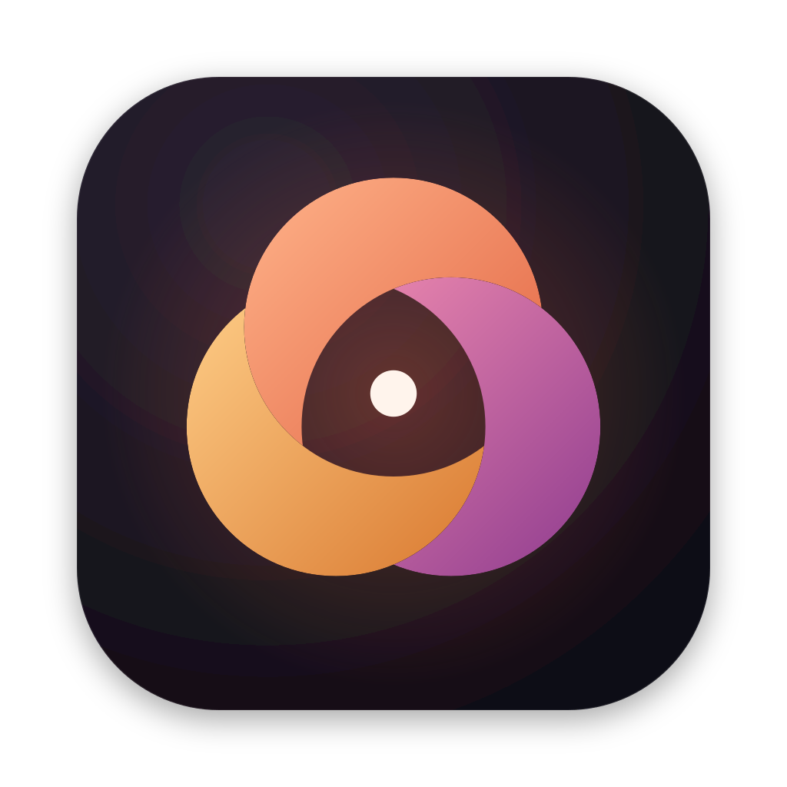
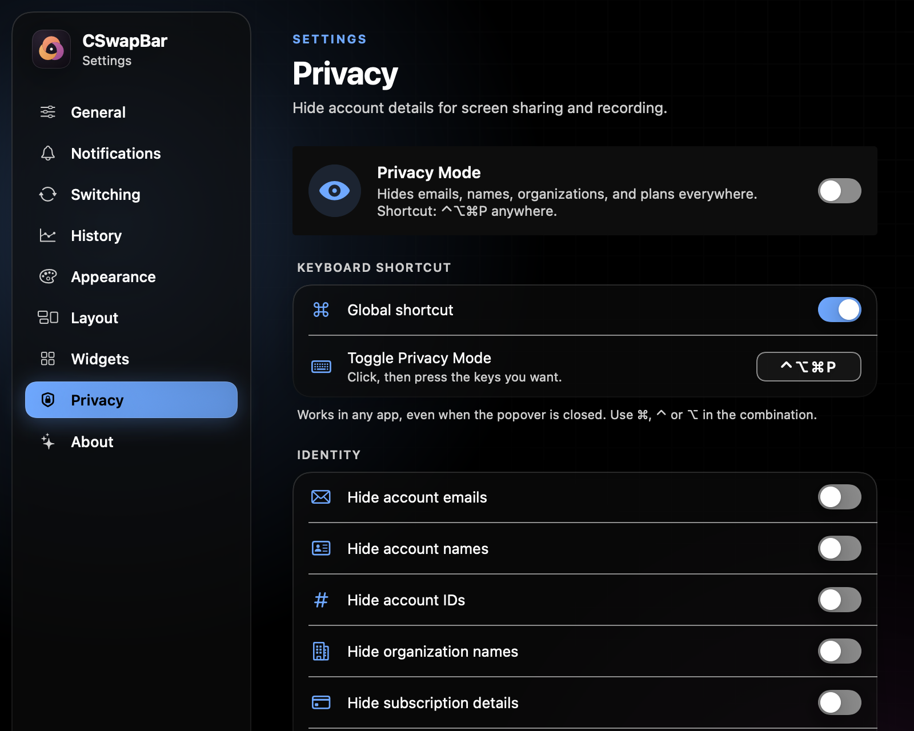
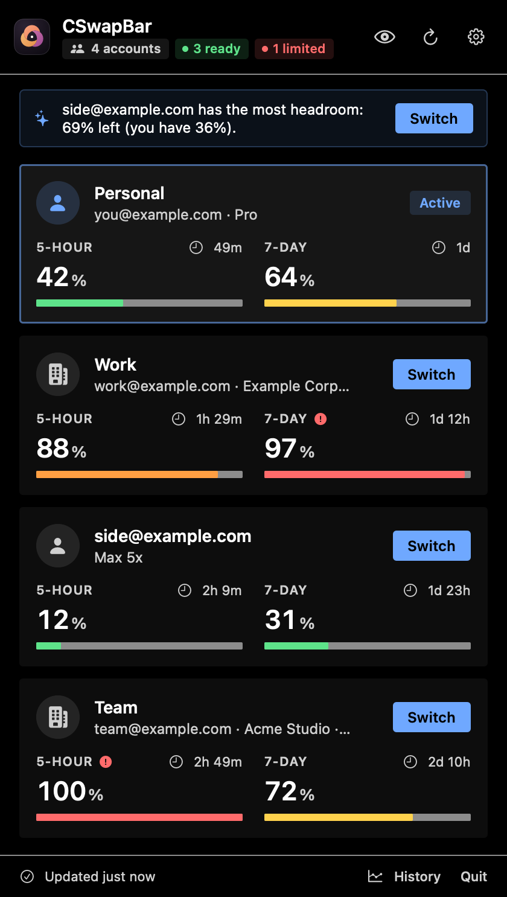
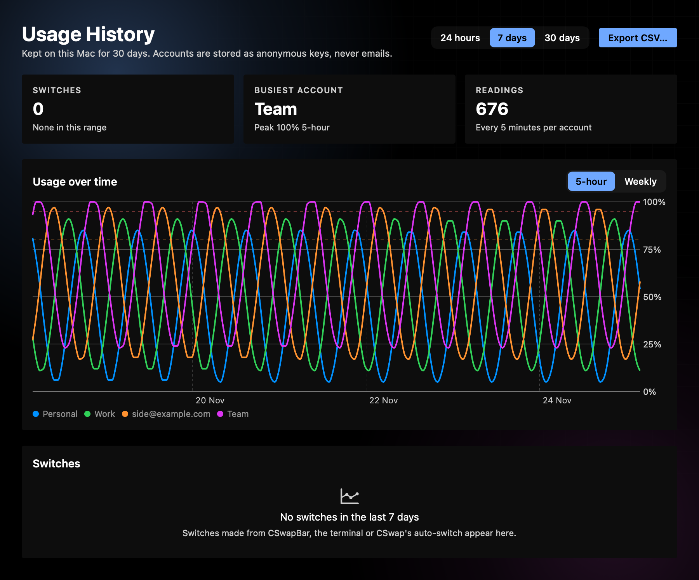
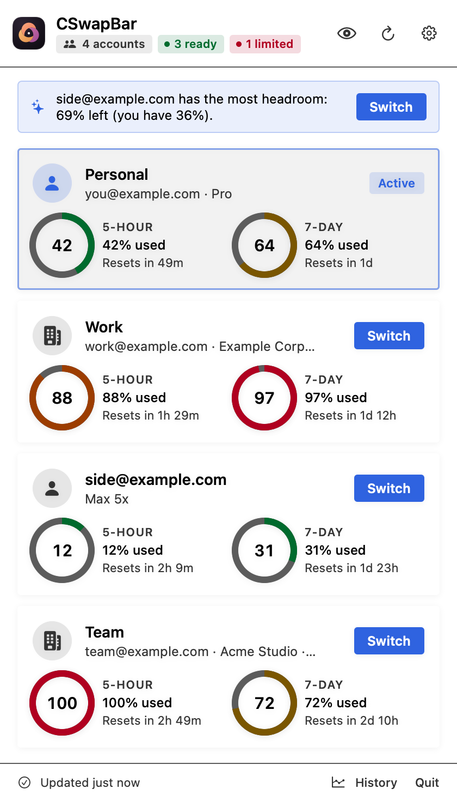
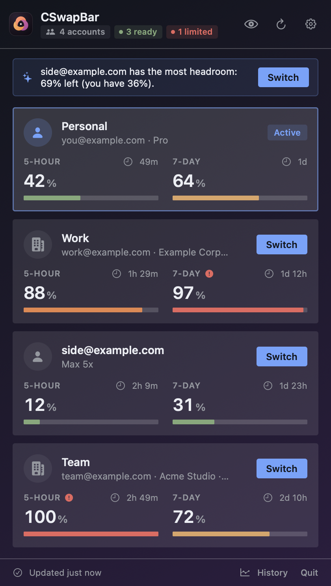
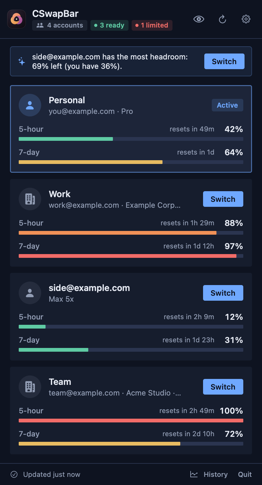

Knows before you do.
Alerts at 80, 95, and 100%, with the reset time. Plus outside switches and logins that need you.

CSwapBar Mac only GitHubCSwapBar for Mac · macOS 14 or later
Every Claude Code account, live in your menu bar or right at the notch. Switch in one click. Get warned before the limit. Vanish it all when you share your screen.
Free · macOS 14 or later · Apple Silicon · Needs CSwap 1.1+

Features
Everything CSwap knows about your accounts, in one place. The only network request is an optional update check.
Alerts at 80, 95, and 100%, with the reset time. Plus outside switches and logins that need you.
Open it from anywhere. Arrows and Return to switch.
When you run low, it suggests the account with the most quota left.
30 days of usage, charted. Only on your Mac.
23 themes or your own. Boxy to round.
New versions come straight from GitHub, and only install once the checksum, bundle, version, and signature all check out.
Usage Island
Prefer the top of the screen to the menu bar? CSwapBar can live in a small black bar that blends into the camera notch. It replaces the menu bar icon, so you only ever see one.
Side has the most headroom: 69% left
Hover or tap the island
Layouts
Big numbers, classic bars, Battery-style rings, or a dense list that fits eight accounts. The popover always sizes itself to its content, and ↑ ↓ ↩ drive it from the keyboard.

History
Usage per account over 24 hours, 7 days, or 30 days, with every switch and where it came from. Kept only on your Mac, with accounts stored as anonymous keys. Export to CSV anytime.

Themes
Native macOS materials, Apple-widget colors, vivid gradients, and high contrast, every one checked for readable contrast. Build your own from five colors, share it as a file, and shape anything from boxy to round.



Privacy Mode
One shortcut, from any app, replaces emails, names, organizations, and plans with generic labels everywhere: cards, widgets, the island, notifications, even screen-reader labels.
Desktop widgets
Three compact widgets that sit on your desktop like macOS widgets. Drag them anywhere. They follow your theme and Privacy Mode.
Install
CSwapBar is only for Mac (macOS 14 Sonoma or later). It needs CSwap with your accounts added.
uv tool install claude-swap && cswap addGet the DMG from GitHub Releases and drag CSwapBar to Applications.
CSwapBar is open source but not notarized by Apple, so macOS asks once.
Prefer no prompts? Build it yourself with one line (needs the Command Line Tools):
curl -fsSL https://raw.githubusercontent.com/iamv1n/cswapbar/main/scripts/get.sh | bashFull install guide · updating, uninstalling, and the "damaged" message explained.
Open source · MIT
Free and MIT licensed. Issues and pull requests are welcome.